Habitrak Edit Tasks in ArcGIS Pro
The replacement for the previous HabiTrak Extension in ArcMap is a set of custom script tools bundled together in the new Task workflow in ArcGIS Pro ("Pro") software, which is the latest Desktop GIS from Esri, currently at version 1.4.1. The Tasks panel in the Pro software groups together a set of goeprocessing tools and instructions in a step by step manner for the user to easily follow a standard procedure.
Terminology
Because the mapping units in the HabiTrak program are called Projects, and work in the Pro desktop GIS is saved in a Windows desktop project file with the extension APRX, the word "project" easily invites confusion. In this document whenever we are referring to a HabiTrak Gain/Loss geographic feature or polygons we will use the capitalized term or proper-cased "Projects", as in "HabiTrak Projects layer", "Project ID", or "Gain Project". Whereas if we are talking about the GIS work or files and system related to the Pro GIS software, we will use the lower case term "project" such as "Pro project" or "project file" or "habitrak project folder". Whenever possible, we will also refer to an attribute field by its name instead of alias such as PROJECTID and TYPE for clarity.
Quick Start Guide
Follow this section to start working in the new Habitrak Edit tools right away with explanation provided as needed. you can follow this guide as an exercise and throw away the result at the end. Then start over with a real edit session.
-
Extract the ArcGIS Pro project
Unzip the habitrak141.zip file and put the expanded folder habitrak141 on a drive, for example, D:\gis\habitrak\habitrak141, or under C:\Users\{username}\Documents\ArcGIS\Projects (the default location where ArcGIS saves and looks for project files) where you can access your organization's HabiTrak data that can be either in an enterprise geodatabase (ArcSDE on SQL Server) or a file geodatabase (.gdb folder) somewhere on the local network. 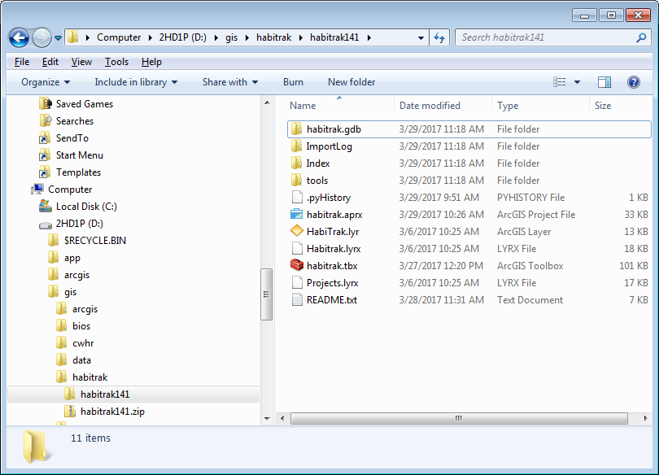
TIP: When you extracted the new ArcGIS Pro project from the zip file sent to you, keep the original zip file as a back up. When you are working in the Pro session, copy your local data into the Pro project so that you do not make changes that you cannot revert back if necessary to your existing database from last year. This way if something happened while trying out the new tools the first time, you can always delete the whole Pro project and workspace folder, and then start over.
-
Open the GIS project in ArcGIS Pro
Open ArcGIS Pro on your desktop to open a Pro project by browsing to the habitrak14 folder and select the habitrak14.aprx file. 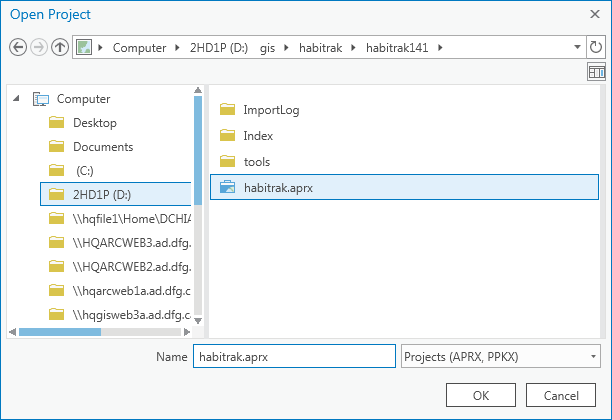 ArcGIS software sometimes has issue with user just double-clicking on the APRX or MXD file to try to open the GIS project with the appropriate software.
-
Open the Habitrak Edit Task
In the Pro software, click on the VIEW ribbon at the top, and click the Tasks button. This will open up the Tasks pane, which will bring up the HabiTask Edit custom tasks saved in the Pro project itself. Alternatively, you can also open the custom tasks by going to the project pane on the right sidebar and expand the Tasks node and clicking on the Habitrak Edit task item under that node. Tasks opens in a tabbed panel docked in the left sidebar next to Contents. 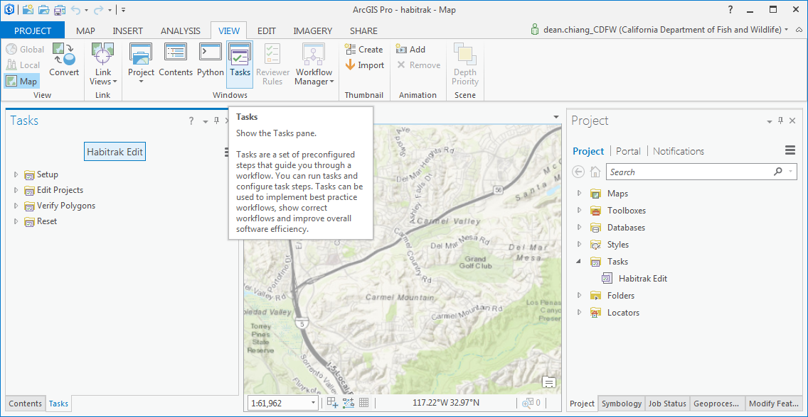 Note that custom Tasks are saved right in and can be passed along with the Pro project. No extension or add-in installation necessary. Under the Habitrak Edit task item are specific tasks such as Add Gain Project. Similar tasks are placed together under a task group like Edit Projects. Each task can include one or more task steps that ask the user to perform some action or run a tool/script.
-
Navigate the Pro project tree and task list
Become familiar with the ArcGIS Pro workspace by expanding the tree nodes under the Habitrak Edit tasks in the left sidebar, and the project tree nodes under the right sidebar. 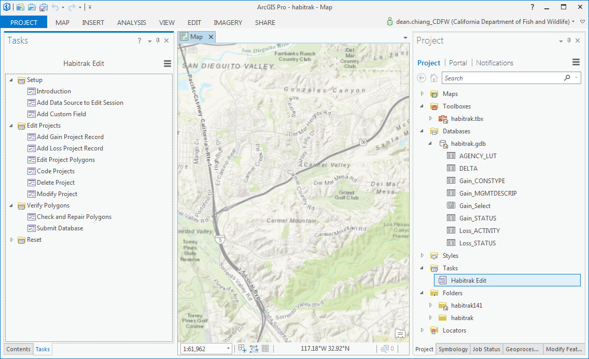 ArcGIS Pro automatically recognizes objects that are associated with a Pro project and place them under their categories. The default toolbox (habitrak.tbx) and default file geodatabase (habitrak.gdb) corresponds to the same objects you will find in Windows Explorer, and the current project folder (habitrak) is flagged as the home folder under Folders category. The custom tools in the habitrak.tbx toolbox are created from the Python script files that reside under the tools folder under the main project folder. DO NOT remove this tools folder or the files reside under it.
-
Set up Pro session to edit your HabiTrak data
This guide will now proceed through the Habitrak Edit tasks in a step by step manner to demonstrate how to use the tools for editing HabiTrak. The tasks are designed to generally follow the order with which a user might perform the data entry and edits.
-
Habitrak Edit Introduction
Under the Habitrak Edit Setup task group, click on the right arrow of the Introduction task to open it. 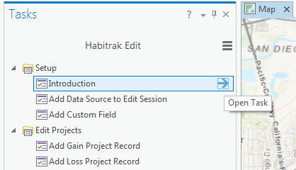 A task step may contain a required or optional procedure, or be purely instructional/ informational, like this first step that simply offers a brief explanation about how this GIS process works. When you finished reading, click the Skip button or Finish to exit the step. 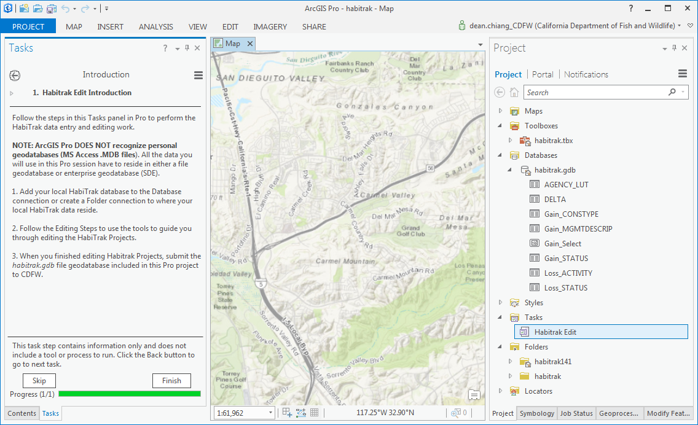
-
Add data source to edit session
REQUISITE: Make sure you can access the HabiTrak database of your organization from within the ArcGIS Pro session by either adding the folder where the file geodatabase resides to the project Folders category in the project pane or through a enterprise database connection file (.sde) under a folder. This guide uses a fictitious file geodatabase called sandiegocity.gdb under the parent folder of the habitrak project folder which you can see in the expanded tree view in the right sidebar. 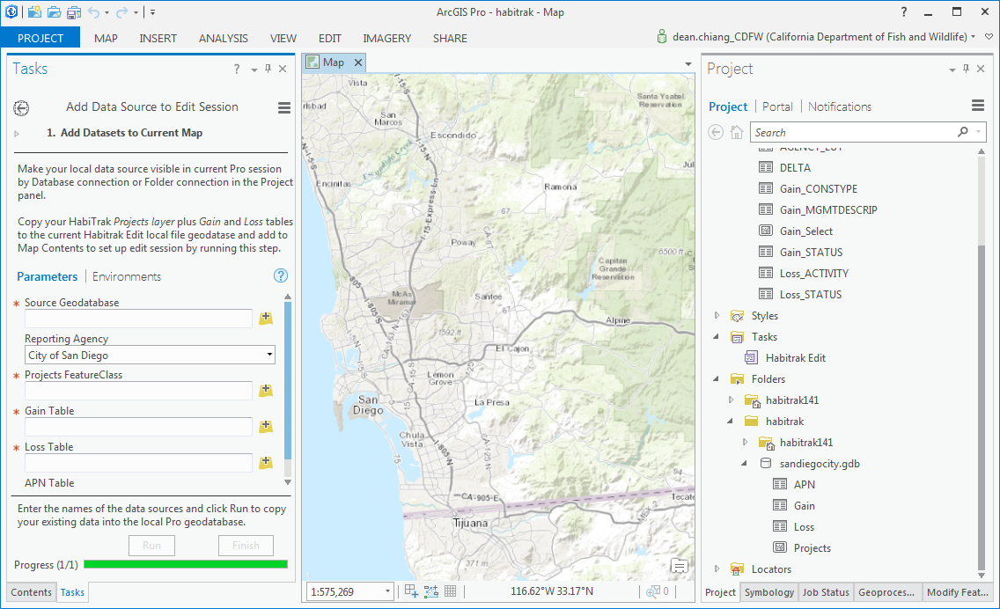
Your organization's HabiTrak data is the data source of the current Pro edit session. Habitrak Edit will copy the source data into the default Pro project database (habitrak.gdb) to only edit and save changes within the project workspace so that your original data is not compromised. If necessary, you can delete the entire habitrak141 folder and start over. 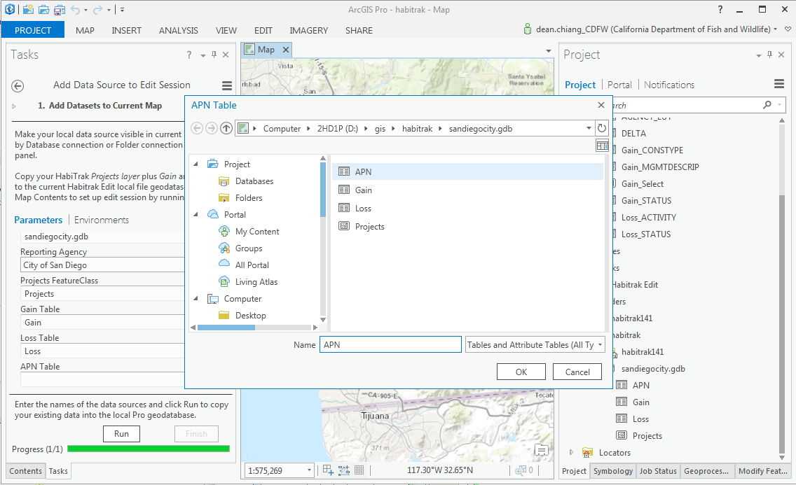
With your local data source identified, open the Add Datasets to Current Map step, fill in the require parameters and click Run. (If you enter only the source database but not the names of the datasets, Habitrak Edit will assume these required datasets are named by their standard names Projects, Gain, and Loss) 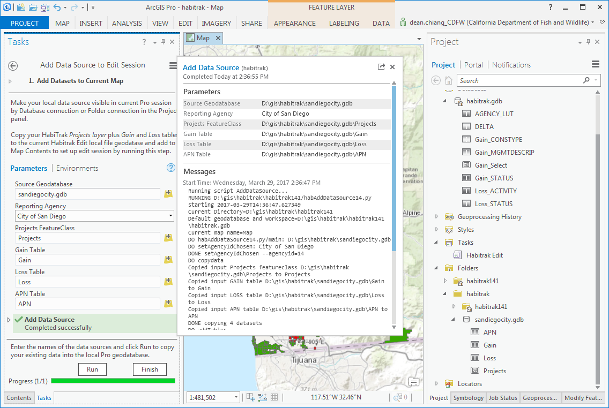
When the Add Datasets to Current Map step is finished, the Projects feature class along with associated Gain, Loss, and maybe APN tables will be copied into the default habitrak.gdb file geodatabase and added to the current map contents. The Projects layer is symbolized using the Projects.lyrx layer file included in the project. 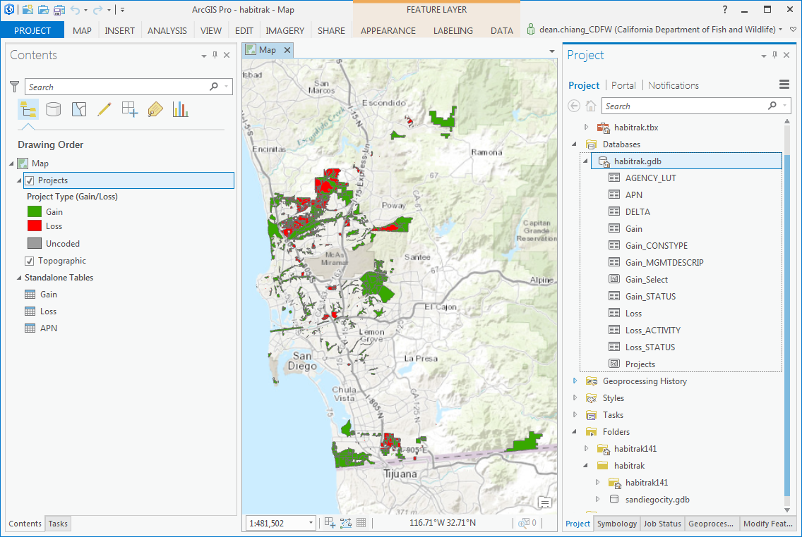
-
Add custom field
For the Gain Project Type, sometimes an extra field is added to record attributes not included in the original Gain table design. You can look at the attribute definitions of the table by right click and go to Design/Fields. 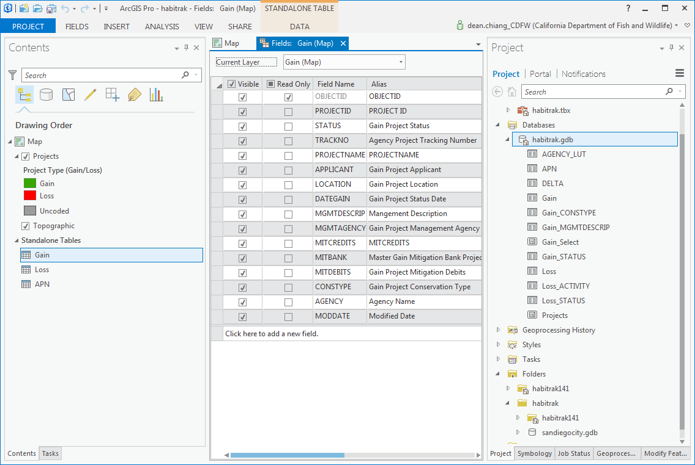 For example, to add a new field called In-Lieu-Fees to the Gain table, use the Add Custom Field/ 1. Add New Field task step to add the new field IN_LIEU_FEES. 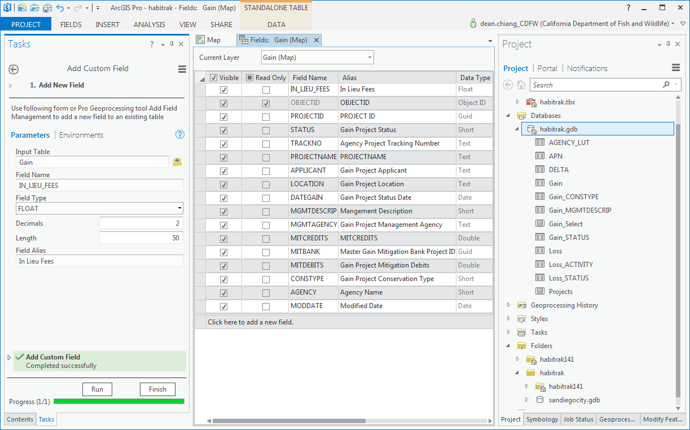 Note that in the Design view the new field may appear above OBJECTID but when you open the actual table the new field will appear in the last column.
-
-
Edit HabiTrak Projects
The HabiTrak database design is fairly straight-forward. Each HabiTrak Project feature is associated with a Type (Gain or Loss) attribute record by the PROJECTID, which is a Globally/Universally Unique Identifier (GUID or UUID). The full attributes are stored in two separate Type tables, Gain and Loss. The built-in editing tools in ArcGIS Pro are easier to use and more intuitive than ArcMap, though care should still be given to perform miscellaneous manual edits on the data where the Habitrak Edit toolset proves inadequate.
-
Add Gain Project record
Click the Add Gain Project Record/ 1. Add Gain Project Record task step to enter the field values for a new Gain type Project attributes. Click Run. When the process is completed successfully, a new record is created in the Gain table with a new PROJECTID assigned. However, there is no Project geographic feature associated with this Type record yet. Click Finish to exit the task step. 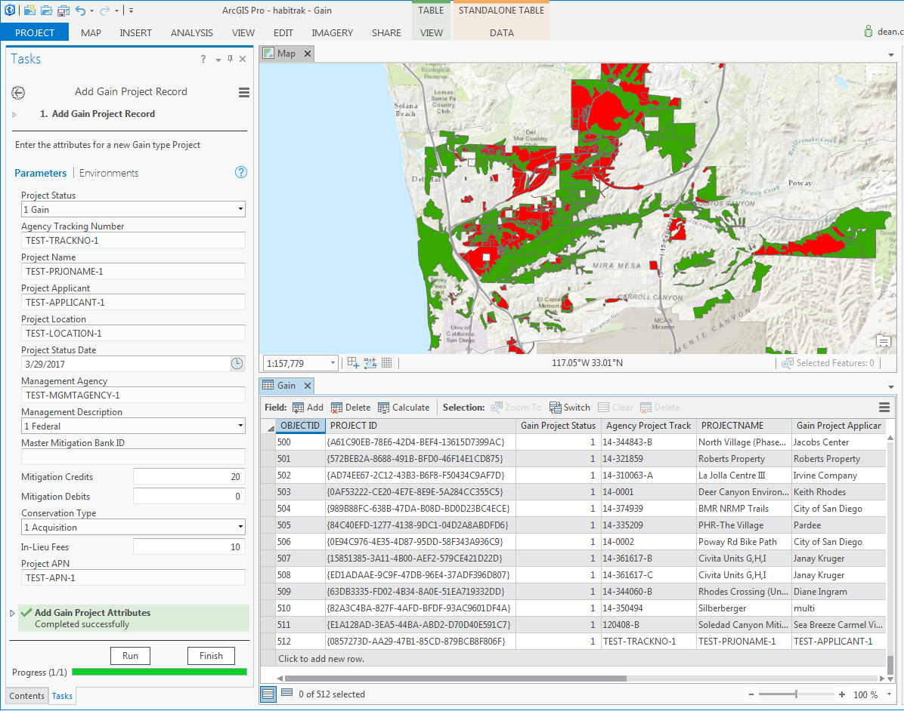
During Habitrak Edit session, a DELTA table is used to keep track of changes to the data. However the user should not need to mind the various internal tables utilized by the Habitrak Edit tasks.
-
Add Project polygon feature
You should be connected to a data source such as Parcels for the latest HabiTrak Project edits. In this guide we will use some dummy polygon datasets in a local file geodatabase called biospub.gdb. Add the input polygon feature class to the current map. 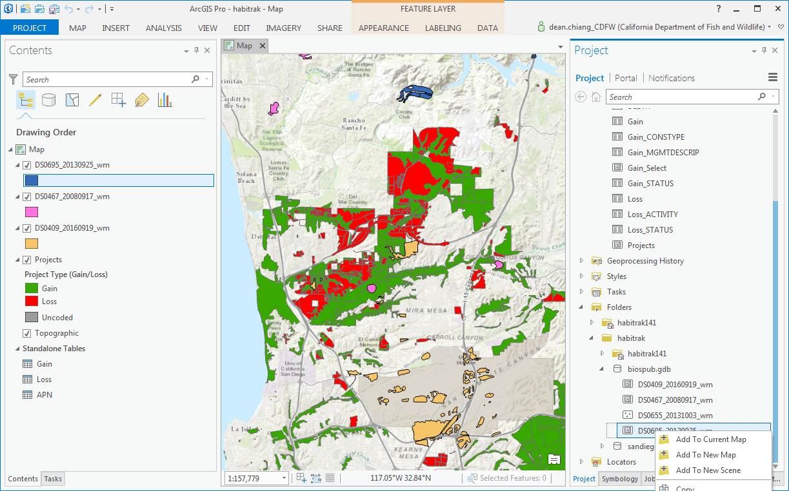
-
Add Loss Project record
-
Code Project polygon to a Type record
-
Delete Project
To delete a Project feature or associated attributes, open the Delete Project task. 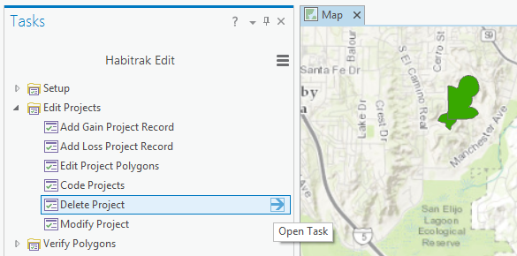
-
Select a polygon feature to delete
Manually select a Project polygon using the Select tool and click Next Step 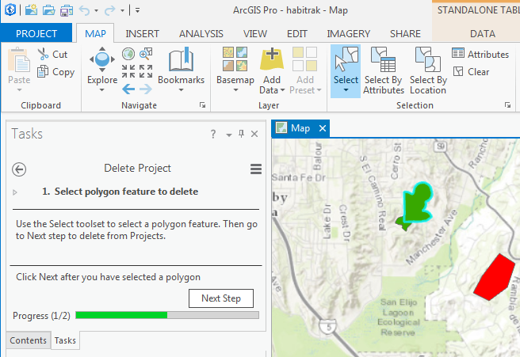
-
Delete selected project
Choose from the Delete Options to either delete All Attributes and Features or Polygons only. Then click Run. 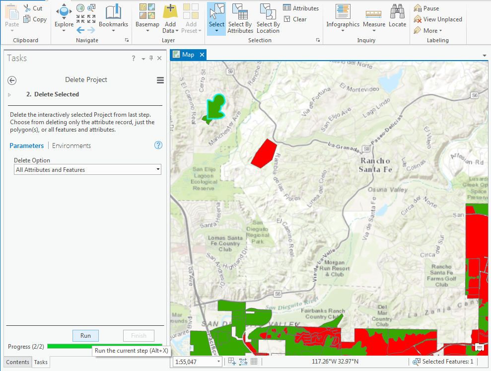 If a HabiTrak Project contains more than one polygon, all polygons will be deleted. By default the associated Type record will also be delete.
When the task step has finished running the Map view often does not reflect the changes to the feature layer. Although you can see the Status bar displays that
Selected Features: 0. Click Finish to exit the task step. 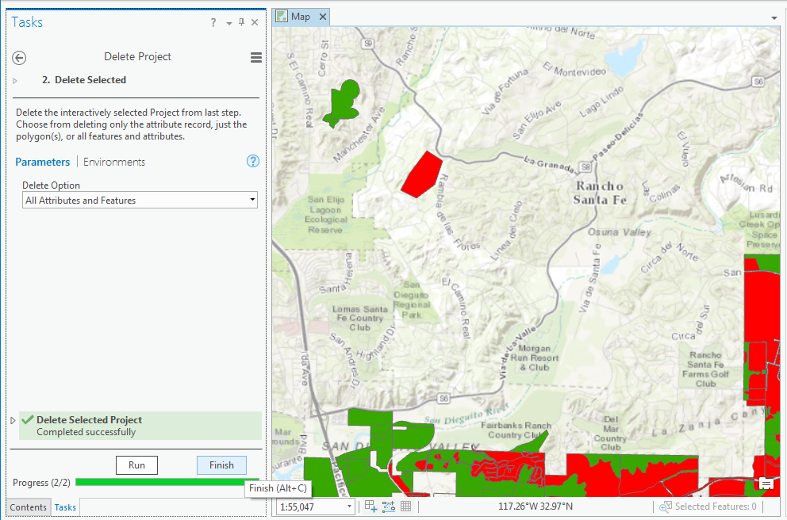
-
-
Modify Project
-
-
-
-
Submit your data
When you are done checking the Projects geometry and are ready to send in the latest data, close ArcGIS Pro and go to the project folder in Windows Explorer. Zip up the habitrak.gdb file geodatabase folder and send the database file to California Department of Fish and Wildlife contact Diane Mastalir . Alternatively you can simply zip up the entire habitrak141 Pro project folder and send that in to CDFW. If the zip file is too large as an email attachment, please contact Diane for other option to send to us. Please do not place the data on Dropbox for transfer as CDFW network does not allow access to Dropbox.
-
Clean up and reset session
-
Clean up database
Choose the option to clean up orphan records in the DELTA table or remove all the data and start over.-
Clean up database to reset for new edit session
This option will clean up the entire Pro project edit session. 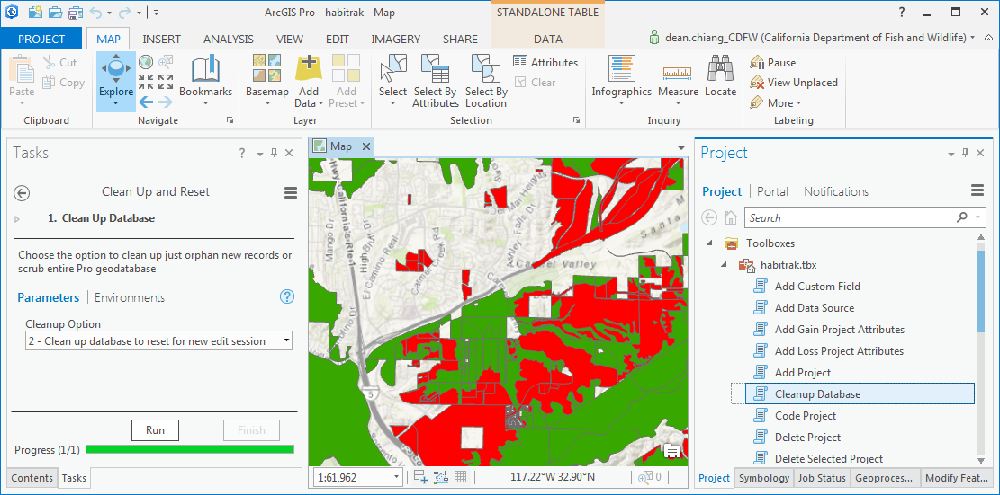 When the task step is complated successfully, your recently edited HabiTrak data in the Pro project local file geodatabase will be deleted and all current map contents removed from the Contents panel.
-
ArcGIS Pro Software
GIS project Structure
The Habitrak Edit software is entirely contained in an ArcGIS Pro project folder send to you as a zip file. The GIS project folder is called "habitrak14" to note that it was written and tested for ArcGIS Pro version 1.4 and consists of the following content:
-
habitrak14/
- the ArcGIS Pro project folder
-
habitrak.gdb/
- the default file geodatabase used by this Pro
project session. All new GIS datasets created
by this habitrak project are written here by default.
Data tables included in the Habitrak Edit software
are generally look-up tables and log tables that
help with the Habitrak Edit work, and include
- AGENCY_LUT
- APN
- DELTA
- APN
- ImportLog/
- Index/
- tools/ - the folder that holds all the Python scripts used by the Habitrak Edit task.
- habitrak.aprx - the ArcGIS Pro GIS project file that includes the Habitrak Edit Task toolset.
- Habitrak.lyrx - the layer symbology file for the Projects feature class. The extension LYRX is used for the Pro format.
- habitrak.tbx - the default Toolbox used by this Pro project. Script tools are created under the toolbox for using the Python scripts included under the tools folder.
-
habitrak.gdb/
- the default file geodatabase used by this Pro
project session. All new GIS datasets created
by this habitrak project are written here by default.
Data tables included in the Habitrak Edit software
are generally look-up tables and log tables that
help with the Habitrak Edit work, and include
Software Use
You open up the Pro project by double-clicking the APRX file (habitrak.aprx) or by starting ArcGIS Pro software and then open the project file.
To help you get up to speed in ArcGIS Pro, here are some basic, common operations in Pro:- Become familiar with the Ribbon tool bar. All the tools are grouped in categories under different tabs labeled in ALL CAPS (MAP, INSERT, ANALYSIS, ...)
- Get used to opening and closing and switching different panels inside the left and right side bars or panes by clicking on their tabs along the bottom. This is where various tool forms and GUI widgets will be organized.
- You can identify a feature by clicking on it with the MAP/Explore (navigation) tool turned on. This comes in handy for clicking on a HabiTrak Project polygon to see its Project ID.
- Interactively selecting a HabiTrak Project feature or polygons is easily done by clicking on MAP/Select tool and then click on the feature or drag a rectangle.
- To use a desktop tool, just open up the Geoprocessing Panel and type into the search box. Tools matching your search term will quickly be displayed and available.
- You can directly edit a standalone table or feature layer attribute table record by double clicking into the data cell and enter a new value. Then hit the tab key to move to the next field (cell) or hit Enter to move to the next row. Once you hit Enter or click outside the table, the Save option under the EDIT ribbon will become active for you to click and save your edits.
- ArcGIS Pro can keep multiple tables opened in one panel separated by tabs with selected record highlighted so that is helpful to reviewing the data being edited. For example, the Project feature selected and associated records can be opened all at the same time and docked together in a layout like this example
- TIP: ArcGIS Pro has a tendency to retain the state of a feature symbol or table view prior to edits being made even after the new edits are saved. To refresh the data view, click Zoom to Layer option on the layer context menu, or close and re-open a table to see the changes.
{kind=link}
Habitrak Edit Task
When you first open up the habitrak.aprx Pro project, the Task panel should be visible in the left side bar or pane. If not, in the Ribbon tool bar, click on VIEW/Task, and the Habitrak Edit Task embedded in the project file should open up. Alternatively, you can also navigate to the Task node in the Project panel on the right side bar and double click on the custom task called Habitrak Edit.
The Habitrak Edit Task displays the following tasks and steps. You should work through adding a single HabiTrak Project area by following the procedure in order. Once you are familiar with the different tools you may work on some items in the order you see fit.
An ArcGIS Pro Task Item or set is organized hierarchically into Groups, which contains one or more Tasks. Each Task can include one or more Steps. A Step can be simply instructions or have a geoprocessing or custom script tool embedded to be used. A step may either be required or can be skipped, and a series of steps may be required to performed in order or individually.
You can always back out of a task step to not perform it. You will be prompted with the message: A task is currently in progress. Do you with to interrupt the current task? Just click Yes
-
Setup (task group)
-
Introduction
-
Add Data Source to Edit Session (task)
-
Add Datasets to Current Map (step)
Specify the geodatabase location where your agency's HabiTrak data resides. The tool will copy your local data into the default habitrak file geodatabase under the Pro project folder. The editing will be performed on the datasets within the habitrak Pro geodatabase only and not touch your existing data.
-
-
Add Custom Field
If you wish to add a custom field into the Gain or Loss tables to record additional data, such as In-Lieu-Fees, you can do so here at this step.Currently this tool ONLY supports adding the field In-Lieu-Fees (IN_LIEU_FEES) into the common Gain table.
-
-
Edit Projects
-
Add Gain Project Record
-
Add Gain Project Record
Enter the attribute data for a new HabiTrak Gain Project in the fields and click Run. The tool will insert a new record into the Gain table with a new unique Project ID.
-
-
Add Loss Project Record
-
Add Loss Project Record
Enter the attribute data for a new HabiTrak Loss Project in the fields and click Run. The tool will insert a new record into the Loss table with a new unique Project ID.
-
-
Edit Polygon Feature
-
Edit Polygon Feature
This step is entirely up to the user to perform. There are various ways to add a new Project polygon or polygons to the Projects feature class. A newly added or appended Project polygon onto the Proejects layer will have a blank Project ID value. To associate this new polygon to the new Gain or Loss record just created, proceed to the Code Project task step.
Editing features in Pro is done with the EDIT ribbon You can add new Project feature(s) by clicking on the EDIT tab and then click Create. Click on a feature type and pick the drawing tool to digitize a new polygon, say a Loss area. When you are done click Save to save all edits. This new feature has no Project ID. To attach the Project ID and attributes added with previous step, perform the next step. -
-
Code Project
-
Code Project
Associate a new Project attribute record to new Project feature or features without a Project ID
-
-
Delete Project
-
Select polygon feature to delete
Use the Select tool to pick a Project polygon. Then go to Next.
-
Delete Selected
Choose from the options to delete just the polygon or both feature and attributes (in Project Type table). Then click Run.
-
-
Modify Project
-
Select Project
Interactive select a HabiTrak Project to modify its attributes. The selection can include more than one polygon, but must only contain one Project ID. If more than one Project are selected, only the first Project will be modified. Then click Next Step.
-
Modify Selected Project Attributes
Enter updated information in the parameters and then click Run to modify the selected, existing Project's attributes. To make sure all features in a Project area is updated, check the Modify Whole Project checkbox at the bottom. The changes are recorded in the DELTA table ACTION column as the following:
- Updated: Only the attributes in the related record are updated but the Project Type is not changed.
- Retyped (Switched, Altered): The TYPE changed for all the features in the whole Project. The Project ID remains the same but the old Project Type record is deleted while a new Project Type record is inserted with new values.
- Promoted/Subtracted: A subset of the polygons of one HabiTrak Project switched from one Project Type to another, for example if some areas in a Gain Project become Loss, then a brand new Project ID GUID is assigned to the changed polygon(s) and new associated record is inserted in the Type attribute table.
When the tool/step has completed click Finish to return to the main Task menu.
NOTE: The new ArcGIS Pro software has made table editing much easier than before. Optionally to edit a Gain or Loss Project attribute, you can simply click into the Gain or Loss table record of that Project, and enter the new values in the cells, and then go to EDIT tab and click Save.
-
-
-
Verify Polygons
-
Check and Repair Polygons
Use the built-in ArcGIS Pro tools in the Data Management Tools to finalize the data
-
Check Geometry
Select the Projects layer as input and click Run. If the output table point out geometry issues needing repairs, click Next.
-
Repair Geometry
Select the Projects layer as input and click Run. Then click Next.
-
Check Geometry Again
Select the Projects layer as input and click Run. If all geometry issues are repaired click Finish.
-
-
Submit Database
-
-
Reset
-
Clean Up and Reset
-
Clean Up Database
Use this tool to clean up the default file geodatabase to start the work over.
-
-